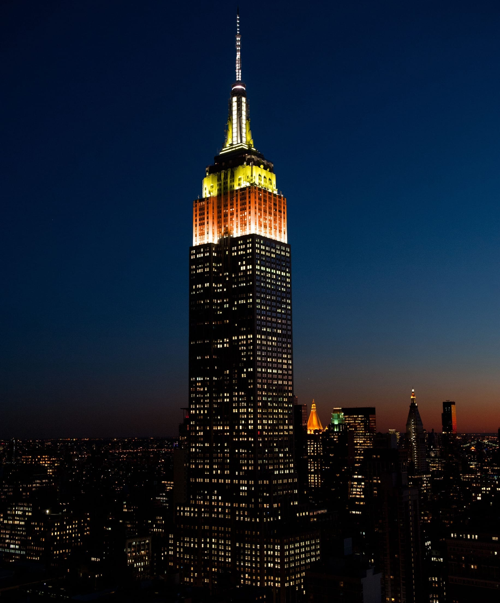

Getting to New York City

John F. Kennedy International Airport (JFK):
John F. Kennedy International Airport (JFK) in Queens, New York City, is a major international gateway to the United States. It features six active terminals, each offering a variety of amenities, including lounges, dining options, and shopping facilities. The airport is well-connected to Manhattan and other boroughs through services like the AirTrain JFK, which links to the NYC subway and Long Island Rail Road. Travelers can also access taxis, rideshares, and shuttle services. JFK provides conveniences such as free Wi-Fi, currency exchange services, and family-friendly facilities, ensuring a comfortable experience for both domestic and international passengers.
- Taxi: $45 flat rate (~45–60 minutes).
- Subway: $7.50 (~60–75 minutes).
- Public Bus: $2.50 (~60–75 minutes).
Newark Liberty International Airport (EWR): Across the Hudson River, 16 miles from Midtown Manhattan.
Newark Liberty International Airport (EWR), located in Newark, New Jersey, is one of the major airports serving the New York metropolitan area. Opened in 1928, it was the first major airport in the United States and remains a key hub for domestic and international travel. Managed by the Port Authority of New York and New Jersey, the airport is known for its convenient proximity to Manhattan, making it a popular choice for travelers. EWR consists of three terminals (A, B, and C), offering a range of amenities, dining options, and retail shops. It serves as a primary hub for United Airlines and connects millions of passengers annually to destinations worldwide. Its accessibility is enhanced by public transportation, including NJ Transit and AirTrain Newark, which link the airport to regional transit systems.
- Taxi: $60–$75 (~45–60 minutes).
- Private bus/van services: $16–$20.
Getting Around with New York City's public transit System
New York City's public transit system is a vast network that includes subways, buses, and taxis, all working together to facilitate efficient travel across the city's five boroughs. The subway system, one of the world's oldest and most extensive, operates 24/7 with 472 stations and 665 miles of track, providing rapid transit throughout Manhattan, Brooklyn, Queens, and the Bronx. Complementing the subways, the Metropolitan Transportation Authority (MTA) operates approximately 5,800 buses across 238 local routes, 20 Select Bus Service routes, and 75 express routes, ensuring comprehensive coverage, especially in areas less accessible by subway. Taxis, easily recognizable by their iconic yellow color, offer flexible point-to-point service citywide, with a base fare of $2.50 plus additional charges based on distance and time. This integrated system enables residents and visitors alike to navigate New York City conveniently and affordably.
- Subways and Buses: Operate 24/7. A single ride costs $2.50, and a 7-day unlimited pass is $29.
- Taxis: Minimum fare is $2.50, with additional charges for distance and traffic.
Where to Stay in New York City
Recommended hotels include:
Frederic Fekkai:The Mark Hotel
The St.Regis New York, New York
The Carlyle, A Rosewood Hotel, New York
The Ritz-Carlton New York, Central Park
The Langham, New York
The Mark Hotel, located at 25 East 77th Street in New York City, is a distinguished luxury hotel on the Upper East Side. Housed in a 1927 landmark building, it seamlessly blends classic elegance with modern design. The hotel features 106 rooms and 53 suites, including the largest penthouse in the U.S. PEOPLE Guests can enjoy dining at The Mark Restaurant by Jean-Georges and pampering at the on-site Frédéric Fekkai Salon, which offers a full spectrum of hair and beauty services. THE MARK HOTEL The Mark's prime location provides easy access to Central Park, Madison Avenue shopping, and renowned cultural institutions, making it a favored choice for both celebrities and discerning travelers.
The St. Regis New York, located at Two East 55th Street at Fifth Avenue, is a historic luxury hotel in Midtown Manhattan. Established in 1904 by John Jacob Astor IV, this Beaux-Arts landmark seamlessly blends timeless elegance with modern amenities. The hotel offers 171 rooms and 67 suites, each meticulously designed to provide a sophisticated retreat. Guests can enjoy the renowned King Cole Bar, famed as the birthplace of the Bloody Mary, and savor fine dining at Astor Court. The St. Regis is celebrated for its signature butler service, ensuring personalized attention for every guest. Its prime location provides easy access to Central Park, premier shopping on Fifth Avenue, and cultural attractions like the Museum of Modern Art. Recent renovations have refreshed its public spaces, enhancing its status as a premier destination for discerning travelers

The Carlyle, A Rosewood Hotel, located at 35 East 76th Street on Manhattan's Upper East Side, is a historic luxury hotel that has epitomized New York elegance since its opening in 1930. Designed in the Art Deco style, the hotel features 190 rooms and suites, many offering stunning views of Central Park. The Carlyle is renowned for its sophisticated ambiance and has hosted numerous celebrities and dignitaries over the decades. Guests can enjoy live entertainment at the iconic Café Carlyle and Bemelmans Bar, both of which contribute to the hotel's timeless charm. Its prime location provides easy access to upscale shopping on Madison Avenue and cultural landmarks like the Metropolitan Museum of Art, making it a favored destination for discerning travelers seeking a quintessential New York experience.

The Ritz-Carlton New York, Central Park, located at 50 Central Park South, is a distinguished luxury hotel offering an elegant retreat in Midtown Manhattan. Housed in the historic building of the former Hotel St. Moritz, this 33-story Emery Roth-designed structure features 253 rooms, including 47 suites, many with sweeping views of Central Park. The hotel's design blends classic opulence with modern sophistication, drawing inspiration from the park's natural beauty and the refined style of a city penthouse. Guests can indulge in the La Prairie Spa, dine at the all-day gastro lounge Contour, and enjoy personalized services such as the Club Lounge with dedicated concierge assistance. Its prime location provides easy access to renowned cultural attractions, upscale shopping on Fifth Avenue, and the serene landscapes of Central Park, making it an ideal choice for both leisure and business travelers seeking a luxurious New York experience.
The Langham, New York, Fifth Avenue, located at 400 Fifth Avenue in Midtown Manhattan, is a luxury hotel offering a serene retreat amidst the city's vibrant energy. Opened in 2010, the hotel features 234 spacious rooms and suites, with even the entry-level Superior rooms starting at 420 square feet, providing ample space for guests. Each accommodation is designed with a contemporary aesthetic, featuring floor-to-ceiling windows that offer views of the Manhattan skyline, and equipped with modern amenities such as deep soaking tubs and complimentary Wi-Fi. The hotel's Michelin-starred restaurant, Ai Fiori, serves gourmet Mediterranean cuisine inspired by the French and Italian Riviera, providing a refined dining experience. Situated between Bryant Park and the Empire State Building, The Langham's prime location offers easy access to iconic landmarks, upscale shopping, and cultural attractions, making it an ideal choice for both leisure and business travelers seeking a luxurious stay in New York City.
Top Attractions in New York City
Empire State Building

Statue of Liberty
Times Square
The Metropolitan Museum of Art
Central Park
The Empire State Building, a landmark of New York City, stands as a symbol of architectural brilliance and historical significance. Completed in 1931, this 102-story Art Deco skyscraper held the title of the world's tallest building for nearly four decades. Its iconic design attracts millions of visitors each year to its observatories, offering breathtaking views of Manhattan and beyond. Recognized as a National Historic Landmark, the Empire State Building continues to shine brightly, with its tower lights celebrating holidays and special events.

The Statue of Liberty, an iconic symbol of freedom and democracy, stands proudly on Liberty Island in New York Harbor. Gifted by France to the United States in 1886 to celebrate their enduring friendship, the statue was designed by sculptor Frédéric Auguste Bartholdi and built with the engineering expertise of Gustave Eiffel. The copper-clad monument depicts Lady Liberty holding a torch and a tablet inscribed with the date of American independence, July 4, 1776. Measuring 305 feet from base to torch, it has become a global emblem of hope and refuge, welcoming millions of immigrants who passed through Ellis Island nearby.

Times Square, often referred to as "The Crossroads of the World," is a bustling commercial and entertainment hub located at the intersection of Broadway and Seventh Avenue in Midtown Manhattan, New York City. Renowned for its vibrant atmosphere, the area is illuminated by massive digital billboards and advertisements, making it a focal point for both tourists and locals alike. Times Square is also the heart of the Broadway Theater District, hosting numerous theaters that contribute to its reputation as a cultural epicenter. Each year, millions gather here to witness the iconic New Year's Eve ball drop, a tradition that has become synonymous with the celebration of the incoming year. The square's dynamic energy and distinctive character make it an enduring symbol of New York City's spirit.
The Metropolitan Museum of Art, commonly known as "The Met," is one of the largest and most prestigious art museums in the world, located on Fifth Avenue in New York City. Founded in 1870, it houses an extensive collection of over two million works spanning 5,000 years of human history. The Met's collection includes masterpieces of classical antiquity, European paintings, Egyptian artifacts, American art, modern and contemporary pieces, and much more. The museum's iconic façade and grand steps have become a cultural symbol, while its diverse exhibitions and educational programs attract millions of visitors annually, making it a must-visit destination for art lovers.
Central Park, located in the heart of Manhattan, New York City, is an expansive urban oasis spanning 843 acres. Designed by Frederick Law Olmsted and Calvert Vaux in 1858, it is one of the most visited urban parks in the world and a designated National Historic Landmark. The park features sprawling meadows, serene lakes, wooded areas, iconic landmarks like Bethesda Terrace, Belvedere Castle, and Strawberry Fields, as well as activities such as boating, cycling, and ice skating. A sanctuary for city dwellers and tourists alike, Central Park provides a perfect blend of natural beauty and cultural attractions.
Travel Tips: Tipping and Accessibility in New York City
Restaurants and Cafes:
- Standard Tip: 15–20% of the pre-tax bill.
- Some establishments may include gratuity for large parties (typically 6 or more); check your bill.
Bars:
- Tip $1–$2 per drink for bartenders.
- For table service at bars, the 15–20% rule applies.
Taxis and Ride-Sharing Services:
- Tip 15–20% of the fare, with a minimum of $2.
- Most ride-hailing apps (e.g., Uber, Lyft) allow you to tip through the app.
Hotels:
- Bellhop/Porter: $2–$5 per bag.
- Housekeeping: $3–$5 per night, left daily.
- Concierge: $5–$20, depending on the complexity of the request.
Other Services:
- Tour Guides: $5–$10 per person for group tours; 15–20% for private tours.
- Hairdressers and Spas: 15–20% of the bill.
Public Transportation:
- Subway: Many stations are wheelchair accessible, with elevators and ramps. Use the MTA’s Accessibility Guide for detailed information on accessible routes and stations.
- Buses: All city buses are wheelchair accessible, with ramps and designated seating.
- Paratransit Service: Access-A-Ride provides door-to-door transportation for individuals with disabilities.
Sidewalks and Crossings:
- Most sidewalks in NYC are equipped with curb cuts for wheelchair access.
- Audible pedestrian signals are installed at many intersections.
Accessible Attractions:
- Statue of Liberty: Wheelchair access is available on the ferry and the pedestal
- Empire State Building: Fully accessible with elevators and ramps.
- Museums: Most museums, like the Met and MoMA, offer wheelchair access, hearing devices, and sensory-friendly programs.
Taxis and Ride-Hailing Services:
- NYC’s yellow taxis include a fleet of wheelchair-accessible vehicles. Use the Accessible Dispatch service to arrange one.
- Apps like Uber and Lyft offer accessible ride options (e.g., WAV—Wheelchair Accessible Vehicles).
Hotels:
- Most hotels have ADA-compliant rooms with features like roll-in showers and lower beds.
Other Resources:
- Contact NYC: The Official Guide for up-to-date accessibility information.
- Download apps like Wheelmap and AccessNow to locate accessible places.
Tipping in New York City
Tipping is a customary practice in New York City, and it’s essential to be aware of standard tipping norms to ensure good service and avoid awkward moments. Here’s a quick guide:
Accessibility in New York City
New York City is one of the most accessible cities in the world, but knowing the resources available can make your trip even smoother.